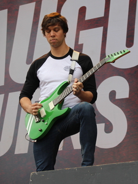
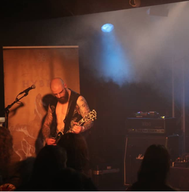
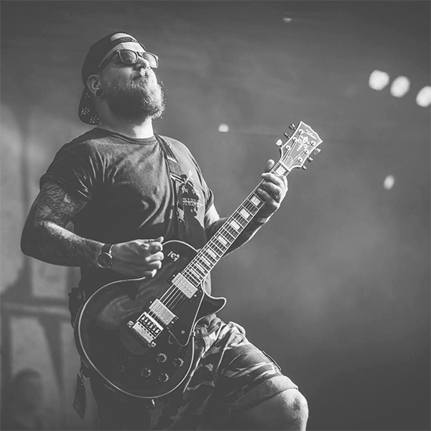

About
Hi and welcome to the van Es pedals website!
I am Michiel van Es, a guitar player with a passion for overdrive pedals and simplicity.
Since I was a young boy I always loved the sound of hard rock and metal music and especially the sound of a powerchord over a high gain amp.
I learned playing guitar when I was 14 and played in bands later on.
I too had issues of G.A.S. (Gear Aqcuiring Syndome) and found out that a heavy guitar sound can be improved by the use of OD pedals with a lot of output and clarity.
I create the Esmeister OD pedal, a pedal which gives one of the best boosts you have heard and is very simple in use (just an on/off knob).
Take a look at the Media section for some images and video clips and at the Testimonials page for testimonials from some users of my pedals since you can better hear it from someone else then the builder of the pedal üòâ
PS. I am no company yet so you can not buy anything yet but stay tuned!
FAQ
What is an OD pedal?
An OD or overdrive pedal boosts your amp by getting a tighter punch with as less colouring as possible so your amp sounds like it is on steroids, something a lot of hardcore/metal guitarist like.
It used to be to push a clean amp to give a little crunch but it’s also found it’s spot on hardcore/metal guitarist’ pedalboards because of this feature to tighten the lows and increase some mids without giving extra gain.
Do you create your own print or pedal lay-out?
No I do not, I use a preprinted print/board with components and alter the layout a bit (for example by applying the Keeley Mod) and change the IC chip and remove the potmeters for trimpots, etc.
Why should I buy your pedal? I can do it myself!
Feel free to create your own pedal! I embrace people creating their own tools for the job!
If you think my pedals look and sound awesome and don’t have the proper skills to create my Esmeister OD pedal then consider buying one. Me and others think it sounds better then most known OD/TS-808 pedals out there without all sorts of knobs to tweak your sound, just an on and off switch.
Why do you think your pedal is better then the bigger known pedals out there?
Better is subjective; I think my pedal sounds better then the known bigger brand OD 808 pedals out there.
I’ve tested them myself and I asked friends and other guitar players to test them out against their beloved green pedal.
Again this is my and their opinion but feel free to like your green OD 808 pedal a bit more then my pedals üôÇ
Are those testimonials I read from those artists real?
Yes they are 100% real; I’ve asked some guitar players that I know or admire to test the pedal and write me an honest testimonial and give me feedback what I could improve on the Esmeister.
No shade endorsements of some kind, just a simple: Are you willing to test my pedal, if so here is my pedal, you can have it for free but please let me know what you think of it in return.
Nothing more, nothing less.
What are the main features of your Esmeister pedals?
- true bypass
- better IC opamp then the default JRC 4558
- Keeley Mod for better dynamics and tight low end even at low drive/gain settings on the pedal
- K.I.S.S. -> just an On/Off button
- sturdy casing and clear led
- channel switching possibility
- perhaps more features or mods without all the knobs and switches üòâ
I want an OD pedal with 100 buttons and features, can you create one for me?
I like to to keep my pedals K.I.S.S. (Keep It Simple Stupid). It does 1 job and does it very well.
The pedal is what you see is what you get, I can add an optional drive knob so you can set the drive yourself but I think the power lies in its simplicity by having all knobs set to default OD settings (which is: drive at 10-20%, tone 50%, level 100%).
Can I change the settings of the pedal beforehand? I'm afraid the settings are too much for my already high gain amp..?
Yes! Tell me how you want your drive, tone and level settings and I'll set it for you on the trimpots used.
What if I don't like the settings you've set in the Esmeister OD?
I suggest you'll ask the option to add a seperate drive knob when ordering so you can set the drive to what you prefer.
Is there any quarantee on the pedal?
If the pedal is a DOA (Dead On Arrival) I will replace the pedal with another, if you open up the pedal you'll loose all guarantee or if the pedal is broken by external factors like falling, water, heat, etc..
If the pedal breaks later on we'll try to work something out
Do you do any sort of quality assurance?
Yes! In matter of fact I do al kinds of quality assurances:
- Functional: I solder by hand, I know machines are more accurate and precise but factory machines are most of the time not made to some proper testing, I check my solder joints and check if all electronics work as expected
- Endurance: I check my pedals after I have soldered them and they are in the casing ensuring there is no short circuit and test the on/off button a good few times to ensure that the pedal works as expected, I also give them a good shake to make sure no short circuit is occurring and that everything remains in its place
Note: I can not guarantee that the pedal always work and work after shipping but if something is broken, contact me and we will sort it out. Most of the time it is an easy fix.
Things do break even when properly created, soldered and tested.
Can I use the channel switching option on all amps?
No, the channel switching option can only be used on latching guitar amp mostly: Peavey 5150/6505, Mesa Boogie Dual Rectifier (older 2 channel) and Laney Lionheart 50.
It is simple but very effective for the most common used metal amps out there.
I see multiple designs of the Esmeister?
This is correct, I created a version with a bull skull design and a simple logo design, the new skull design is the current and final design for the Esmeister OD pedal
When can I buy your pedals?
No ETA yet, working on setting up a shop/payment option and looking at tax and shipment options.
How am I informed of new iterations to your pedals or when I can buy them or any news in general?
Please check my Instagram, subscribe to it (check the feed) or send me an email via the contact form of this blog or my website.
Testimonials
Stefan van Neerven, Guitarist for Born from Pain:
“Let me start off by stating that I am not a 'pedal guy' and therefore also not an 'overdrive guy'. I like the way amps sound the way they are. All my amps have plenty of gain so I never felt the need to overdrive them. I do own a couple of different overdrives, but they never made it to my rig. The Esmeister changed the way I look at that. If an overdrive gives your amp an ass-kick, the Esmeister gives it 2. Use it on a Mesa-like amp and it wil add aggression and tightness without losing too much depth in your chug. Use it on a Marshall-like amp and it will instantly modernise its tone and distortion character. The only disadvantage is that once you turn an Esmeister on, your awesome sounding amp will suddenly sound quite boring without it. Add some killer graphics and protected settings to that and you have an absolute winner. “
Mike Schleibaum, Guitarist for Darkest Hour:

“The Esmeister is a killer addition to my arsenal of high gain ear splitting guitar assault tools!. I love its simple and sleek construction. I am also not turned off by its lack of tonal control, I love pedals that know exactly what they are. It‚Äôs easy to blend this pedal with many modern high gain options and I have enjoyed experimenting with the boast it brings. I love that the Esmeister doesn‚Äôt lose low end and still delvers that punch. A must have for all you overdrive pedal enthusiasts out there! “
Scott Mellinger, Guitarist for Zao:
“The Van Es overdrive is perfect in its simplicity, it gives you that extra punch without coloring the tone. A lot of other OD‚Äôs I‚Äôve tried seem to brighten up or lose low end, the Van Es doesn‚Äôt. The channel switching capability is an added awesome bonus and works flawlessly with my Mesa Tremoverb. Do not be turned off by not having EQ or any other knob, trust me there is no need to adjust anything it‚Äôs right where you want it. “
JB Brubaker, Guitarist for August Burns Red:

“The Esmeister overdrive pedal rips. I traditionally have used a Maxon OD808 or Ibanez TS9 in front of my Peavey 6505+, but this pedal sounds tighter with more punch than my old overdrive pedals. I found my palm mute chugs to be tighter and less fizzy. This pedal rules! I also love the light up bull eyes on the pedal itself. Nice touch!”
Tommie Bonajo, Producer/Guitarist for Tomster Studios/Blind Sight:
“I’ve tried the Esmeister with the MC33178 chip on my Mesa Dual Rectifier and it smoked the OD808! It gave the amp more pronounced mids, less fizz in the high end and a tighter low end. Also love the plug n play, one button control and the great bullhead design.”
Draconis, Guitarist / Vocalist / Composer for INFINITY :

“The Esmeister is one of the best overdrive pedals I have used. It currently has knocked my Maxon OD-820 off the overdrive throne. It features tighter low ends and has a bit more punch, clarity and sounds more aggressive.
It has an excellent clarity of individual notes, but still has a kind of warm and round touch when riffing with power chords. It is also a perfect and tight sounding pedal when tremolo picking or doing palm mutes.
Besides the great sound it is a very simple, easy to use and robust piece of kit.
The Esmeister pairs very well with my 5150 amp and sits great in our overall mix, giving the dynamic aggressive sound we are looking for.”
Tim van Tilburg, Guitarist for All for Nothing:

“The pedal sounds better then my Maxon OD-808, I love the simplicity and the way it tightens up my amp (Peavey 5150). I use it as my main OD on our current tour.“